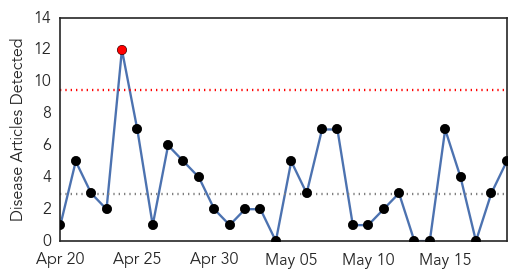
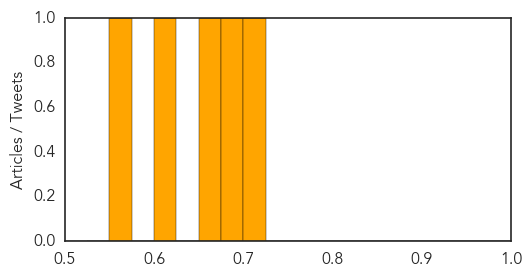

Yellow Fever
30-Day Web Trend
2 alerts, 0 warnings

30-Day Twitter Trend
0 alerts, 0 warnings

Article Locations

Article Confidences

Top Articles:
Top Tweets:
-
No tweets found for May 19, 2015
Hepatitis
30-Day Web Trend
1 alerts, 0 warnings

30-Day Twitter Trend
0 alerts, 0 warnings

Article Locations

Article Confidences
Top Articles:
- 0.722
- Warning from Dept. of Health: germs in pools can get you sick
- 0.698
- Health department recommends baby boomers to get tested for hepatitis C
- 0.668
- CDC Warns Travelers in Wake of Hepatitis A Outbreak in Mexico
- 0.607
- Wisconsin Gazette - Smart, independent and revealing. News, opinion and entertainment coverage
- 0.558
- Free Screenings For Hepatitis Today In Orange County
Top Tweets:
-
No tweets found for May 19, 2015